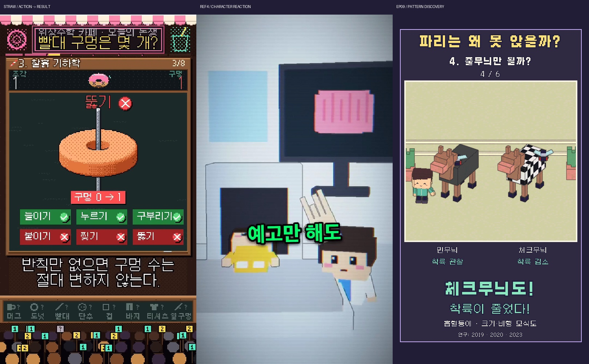

기존 나무위키 미스터리 캐시에서 선정한 얼룩말 줄무늬. 40개 후보→10개 상세 검토→5개 후킹 검토. 편집 평가86점이며 흥행 지표가 아니다.
한국어 최종 영상 · 영어판 · 540p 전체 프리뷰 · 실행 결과
36초 / 1080×1920 / 30fps. TTS 없이 기존 로컬 BGM+SFX. 설명용 파리의 크기·비행은 모식도이다.
| 컷 | 역할 | 새 정보 | 실제 행동 |
|---|---|---|---|
| S01 | 기 | 흡혈등에의 착륙 차이 | 파리가 한쪽에 앉고 다른 쪽에서 방향을 바꾼다 |
| S02 | 승 | 동물 차이를 통제하는 덮개 실험 | 민수가 덮개를 내려 말의 몸통을 가린다 |
| S03 | 승 | 2019실험의 7마리·3종덮개 조건과 착륙감소 | 두 덮개의 비행과 착륙 결과를 비교한다 |
| S04 | 전 | 다가옴과 안정된 착륙은 다른 사건 | 옆면 확대에서 회색 쪽은 감속해 앉고 줄무늬 쪽은 지나친다 |
| S05 | 전 | 체크무늬 효과는 평행줄만의 착시 설명에 반례 | 민수가 체크덮개를 펼치고 접근한 파리가 궤도를 바꾼다 |
| S06 | 전 | 2023연구의 대비조건 차이 | 같은 줄 배치의 대비만 다른 두 덮개에 접근한 파리를 비교한다 |
| S07 | 전 | 큰 검은 패치를 없애는 설명은 연구가설 | 넓은 검은 표면 위에 흰 구획이 드러나 작은 패치로 분할된다 |
| S08 | 결 | 확인된 효과를 처음 사건에 적용 | 처음 두 말을 다시 보여 주고 민수가 비교결과를 가리킨다 |
| S09 | 결 | 효과와 미확인 원리·예외를 구분 | 무늬에 접근해 실제로 앉는 파리 하나도 보여 과장을 막는다 |
줄무늬가 착륙을 줄이는 효과와 체크무늬/대비 비교를 전달한다. 시각 기제 전체나 진화의 단일 원인을 확정하지 않는다. 2019의7마리·3상용덮개 숫자는 조건이며 착륙률이 아니다. 해당 덮개는 재질이 통일되지 않았다는 원 연구의 조건을 claim ledger에 보존했다.

전체 프리뷰의 최종용3D 캐시를 최종판·영어판에 재사용했다. 처음 전체 프리뷰3D 635.82초, 수정한 한 컷의3D 단계 104.51초, 최종3D 단계 5.50초. 최종 재렌더 0프레임 / 재사용 1080프레임. 측정된 샘플·전체·수정·최종3D 단계 합계 956.75초(초기 정지시안 별도 시간은 미보존). 한국어 합성 14.13초, 영어 84.57초. 기존 자산8종 재사용, 신규 모형·환경·덮개 묶음9종. 외부 LLM API 추가0; 대화 토큰 절감률은 미측정.
한국어·영어 각1080프레임 전체 디코드, 네이티브 캐시 해시, 글리프,자막충돌,오디오AAC·피크,과학 출처·기존 파일 보존 검사 통과. 실제 프리뷰/최종 MP4 표본 프레임을 검사했다. 실시간 재생·실제 청취·시청자 반응 시험은 수행하지 않았다.